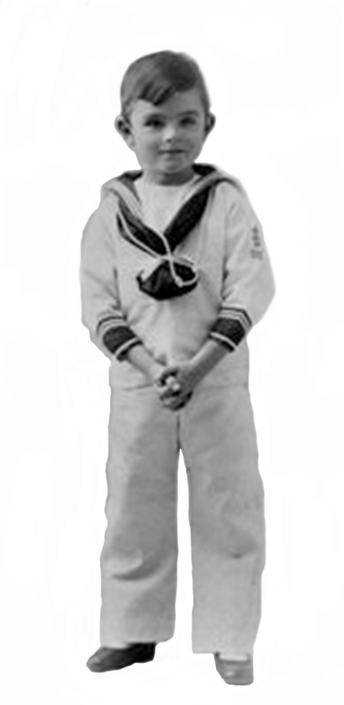
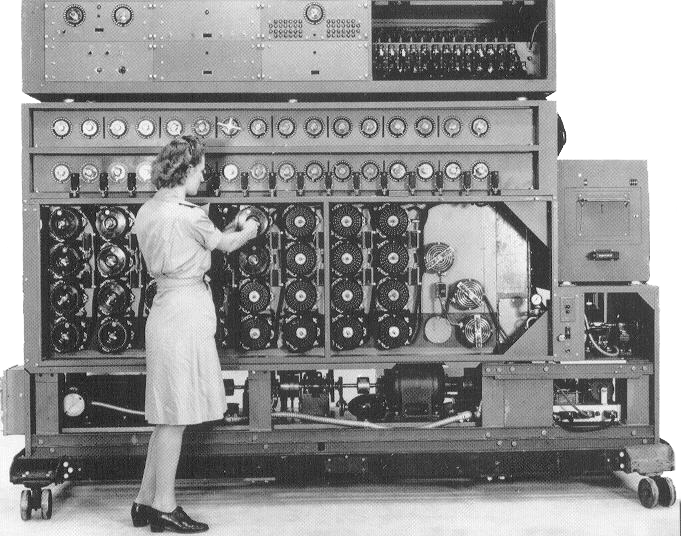
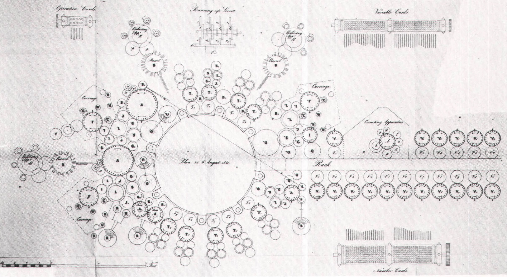
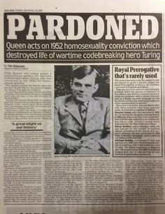
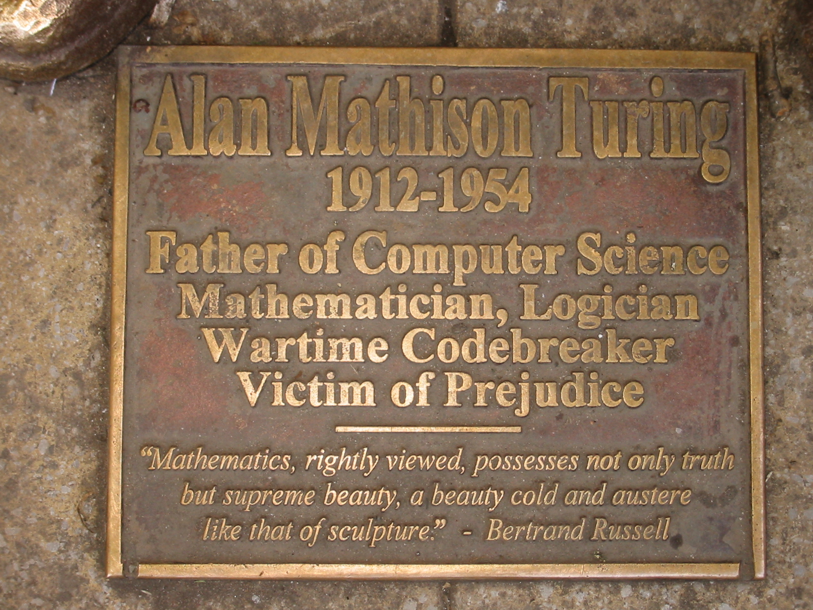

1912
1912
Alan Mathison Turing born in Maida Vale, London , to Ethel Sara Turing (nee Stoney) and Julius Mathison Turing.
Alan attends Sherborne School where he develops a strong interest in science and math with the help of his friend Christopher Morcom. Christopher suddenly dies, leaving Alan devastated.
Alan graduates with distinction in Mathematics from King's College, Cambridge.
Alan goes to Princeton University in America to study mathematics and is awarded a PhD.
Alan is asked to join the Government Codes and Ciphers School where he eventually develops the Bombe to decipher the Germans using their Enigma machine. According to Winston Churchill, this helped shorten WWII by two years.
Alan publishes a paper with the first detailed design of a stored-program computer.
Alan publishes the famous paper 'Computing Machinery in Intelligence', where he developed the Turing Test . The test determins whether or not a machine is intelligent.
Alan is arrested for gross indecency for homosexual behavior. He loses his security clearance so he cannot work. He is offered hormone treatment instead of going to prison.
The hormone treatment made Alan mentally and physically unwell. On June 8, 1954 Alan's housekeeper found him dead with a half-eaten apple laced with cyanide next to him.
READ MORE ABOUT ALAN HERE